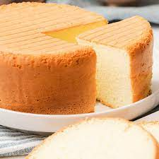

Cake Recipes
This vanilla cake has the most soft, tender, melt-in-your mouth crumb and is bursting with vanilla flavour. A moist vanilla cake that acts as a great base recipe.

Ingredients
- 1 cup white sugar
- 1/2 cup unsalted butter
- 2 large eggs
- 2 teaspoons vanilla extract
- 1 and 1/2 cups all-purpose flour
- 1 and 3/4 teaspoons baking powder
-
1/2 cup milk
Instructions and Steps of how to make::
-
Gather all ingredients.
-
Preheat the oven to 350 degrees F (175 degrees C). Grease and flour a 9-inch square cake pan.
- Cream sugar and butter together in a mixing bowl. Add eggs, one at a time, beating briefly after each addition. Mix in vanilla.
-
Combine flour and baking powder in a separate bowl. Add to the wet ingredients and mix well. Add milk and stir until smooth.
-
Pour batter into the prepared cake pan.
-
Bake in the preheated oven until the top springs back when lightly touched, 30 to 40 minutes.
-
Remove from the oven and cool completely..
- Put some Chocolate Syrup all-over and spread it nicely.
Serve these fluffy cakes with whipped
cream or chocolate syrup.
Go Back